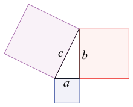
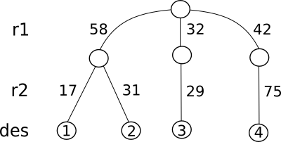

Python basics¶
Download exercises zip¶
PREREQUISITES:
Having installed Python 3 and Jupyter: if you haven’t already, look Installation
Having read Tools and scripts
Jupyter¶
Jupyter is an editor taht allows to work on so called notebooks, which are files ending with the extension .ipynb. They are documents divided in cells where for each cell you can insert commands and immediately see the respective output. Let’s try to open this.
Unzip exercises zip in a folder, you should obtain something like this:
basics
basics-sol.ipynb
basics.ipynb
jupman.py
WARNING: to correctly visualize the notebook, it MUST be in an unzipped folder !
open Jupyter Notebook. Two things should appear, first a console and then a browser. In the browser navigate the files to reach the unzipped folder, and open the notebook
basics.ipynb
WARNING: DO NOT click Upload button in Jupyer
Just navigate until you reach the file.
WARNING: open the notebook WITHOUT the -sol at the end!
Seeing now the solutions is too easy ;-)
Go on reading the exercises file, sometimes you will find paragraphs marked Exercises which will ask to write Python commands in the following cells.Exercises are graded by difficulty, from one star ✪ to four ✪✪✪✪
WARNING: In this book we use ONLY PYTHON 3
If you obtain weird behaviours, check you are using Python 3 and not 2. If by typing python your operating system runs python 2, try executing python3
If you don’t find Jupyter / something doesn’t work: have a look at installation
Shortcut keys:
to execute Python code inside a Jupyter cell, press
Control + Enterto execute Python code inside a Jupyter cell AND select next cell, press
Shift + Enterto execute Python code inside a Jupyter cell AND a create a new cell aftwerwards, press
Alt + EnterIf the notebooks look stuck, try to select
Kernel -> Restart
Objects¶
In Python everything is an object. Objects have properties (fields where to save values) and methods (things they can do). For example, an object car has the properties model, brand, color, numer of doors, etc … and the methods turn right, turn left, accelerate, brake, shift gear …
According to Python official documentation:
"Objects are Python’s abstraction for data. All data in a Python program is represented by objects or by relations between objects."
For now it’s enough to know that Python objects have an identifier (like, their name), a type (numbers, text, collections, …) and a value (the actual value represented by objects). Once the object has been created the identifier and the type never change, while the value may change (mutable objects) or remain constant (immutable objects).
Python provides these predefined types ( built-in ):
Type |
Meaning |
Domain |
Mutable? |
|---|---|---|---|
|
Condition |
|
no |
|
Integer |
\(\mathbb{Z}\) |
no |
|
Integer |
\(\mathbb{Z}\) |
no |
|
Rational |
\(\mathbb{Q}\) (more or less) |
no |
|
Text |
Text |
no |
|
Sequence |
Collezione di oggetti |
yes |
|
Sequence |
Collezione di oggetti |
no |
|
Set |
Collezione di oggetti |
yes |
|
Mapping |
Mapping between objects |
yes |
For now we will consider only the simplest ones, later in the book we will deep dive in each of them.
Variables¶
Variables are associations among names and objects (we can call them values).
Variables can be associated, or in a more technical term, assigned to objects by using the assignment operator =.
The instruction
[2]:
diamonds = 4
may represent how many precious stones we keed in the safe. What happens when we execute it in Python?
an object is created
its type is set to
int(an integer number)its value is set to 4
a name
diamondsis create in the environment and assigned to that object
Detect the type of a variable¶
When you see a variable or costant and you wonder what type it could have, you can use the predefined function type:
[3]:
type(diamonds)
[3]:
int
[4]:
type(4)
[4]:
int
[5]:
type(4.0)
[5]:
float
[6]:
type("Hello")
[6]:
str
Reassign a variable¶
Consider now the following code:
[7]:
diamonds = 4
print(diamonds)
4
[8]:
diamonds = 5
print(diamonds)
5
The value of diamonds variable has been changed from 4 to 5, but as reported in the previous table, the int type is immutable. Luckily, this didn’t prevent us from changing the value diamonds from 4 to 5. What happend behind the scenes? When we executed the instructions diamonds = 5, a new object of type int was created (the integer 5) and made available with the same name diamonds
Reusing a variable¶
When you reassign a variable to another value, to calculate the new value you can freely reuse the old value of the variable you want to change. For example, suppose to have the variable
[9]:
flowers = 4
and you want to augment the number of flowers by one. You can write like this:
[10]:
flowers = flowers + 1
What happened? When Python encounters a command with =, FIRST it calculates the value of the expression it finds to the right of the =, and THEN assigns that value to the variable to the left of the =.
Given this order, FIRST in the expression on the right the old value is used (in this case 4) and 1 is summed so to obtain 5 which is THEN assigned to flowers.
[11]:
flowers
[11]:
5
In a completely equivalent manner, we could rewrite the code like this, using a helper variable x. Let’s try it in Python Tutor:
[12]:
# WARNING: to use the following jupman.pytut() function,
# it is necessary first execute this cell with Shift+Enter
# it's enough to execute once, you can also find in all notebooks in the first cell.
import jupman
[13]:
flowers = 4
x = flowers + 1
flowers = x
jupman.pytut()
[13]:
You can execute a sum and do an assignment at the same time with the += notation
[14]:
flowers = 4
flowers += 1
print(flowers)
5
This notation is also valid for other arithetic operators:
[15]:
flowers = 5
flowers -= 1 # subtraction
print(flowers)
4
[16]:
flowers *= 3 # multiplication
print(flowers)
12
[17]:
flowers /= 2 # division
print(flowers)
6.0
Assignments - questions¶
QUESTION: Look at the following questions, and for each try to guess the result it produces (or if it gives an error). Try to verify your guess both in Jupyter and in another editor of .py files like Spyder:
x = 1 x x
x = 1 x = 2 print(x)
x = 1 x = 2 x
x = 1 print(x) x = 2 print(x)
print(zam) print(zam) zam = 1 zam = 2
x = 5 print(x,x)
x = 5 print(x) print(x)
x = 3 print(x,x*x,x**x)
3 + 5 = x print(x)
3 + x = 1 print(x)
x + 3 = 2 print(x)
x = 2 x =+ 1 print(x)
x = 2 x = +1 print(x)
x = 2 x += 1 print(x)
x = 3 x *= 2 print(x)
Exercise - exchange¶
✪ Given two variables a and b:
a = 5
b = 3
write some code that exchanges the two values, so that after your code it must result
>>> print(a)
3
>>> print(b)
5
are two variables enough? If they aren’t, try to introduce a third one.
[18]:
a = 5
b = 3
# write here
Exercise - cycling¶
✪ Write a program that given three variables with numebers a,b,c, cycles the values, that is, puts the value of a in b, the value of b in c, and the value of c in a .
So if you begin like this:
a = 4
b = 7
c = 9
After the code that you will write, by running this:
print(a)
print(b)
print(c)
You should see:
9
4
7
There are various ways to do it, try to use only one temporary variable and be careful not to lose values !
HINT: to help yourself, try to write down in comments the state of the memory, and think which command to do
python # a b c t which command do I need? # 4 7 9 # 4 7 9 7 t = b # # #
[19]:
a = 4
b = 7
c = 9
# write code here
print(a)
print(b)
print(c)
4
7
9
[20]:
9
4
7
Changing type during execution¶
You can also change the type of a variable duting the program execution but normally it is a bad habit because it makes harder to understand the code, and increases the probability to commit errors. Let’s make an example:
[21]:
diamonds = 4 # integer
[22]:
diamonds + 2
[22]:
6
[23]:
diamonds = "four" # text
Now that diamonds became text, if by mistake we try to treat it as if it were a number we will get an error !!
diamonds + 2
---------------------------------------------------------------------------
TypeError Traceback (most recent call last)
<ipython-input-9-6124a47997d7> in <module>
----> 1 diamonds + 2
TypeError: can only concatenate str (not "int") to str
Multiple commands on the same line¶
It is possible to put many commands on the same line (non only assignments) by separating them with a semi-colon ;
[24]:
a = 10; print('So many!'); b = a + 1;
So many!
[25]:
print(a,b)
10 11
NOTE: multiple commands on the same line are ‘not much pythonic’
Even if sometimes they may be useful and less verbose of explicit definitions, they are a style frowned upon by true Python ninjas.
Multiple initializations¶
Another thing are multiple initializations, separated by a comma , like:
[26]:
x,y = 5,7
[27]:
print(x)
5
[28]:
print(y)
7
Differently from multiple commands, multiple assignments are a more acceptable style.
Exercise - exchange like a ninja¶
✪ Try now to exchange the value of the two variables a and b in one row with multiple initialization
a,b = 5,3
After your code, it must result
>>> print(a)
3
>>> print(b)
5
[29]:
a,b = 5,3
# write here
Names of variables¶
IMPORTANT NOTE:
You can chose the name that you like for your variables (we advise to pick something reminding their meaning), but you need to adhere to some simple rules:
Names can only contain upper/lower case digits (
A-Z,a-z), numbers (0-9) or underscores_;Names cannot start with a number;
Variable names should start with a lowercase letter
Names cannot be equal to reserved keywords:
Reserved words:
|
|
|
|
|
|
|
|
|
|
|
|
|
|
|
|
|
|
|
|
|
|
|
|
|
|
|
|
|
|
|
|
|
|
system functions: beyond reserved words (which are impossible to redefine), Python also offers several predefined system function:
bool,int,float,tuple,str,list,set,dictmax,min,sumnext,iterid,dir,vars,help
Sadly, Python allows careless people to redefine them, but we do not:
V COMMANDMENT: You shall never ever redefine system functions
Never declare variables with such names !
Names of variables - questions¶
For each of the following names, try to guess if it is a valid variable name or not, then try to assign it in following cell
my-variablemy_variabletheCountthe countsome@varMacDonald7channelchannel7stand.bychannel45maybe3maybe"ciao"'hello'asPLEASE: DO UNDERSTAND THE VERY IMPORTANT DIFFERENCE BETWEEN THIS AND FOLLOWING TWOs !!!asinoAslistaPLEASE: DO UNDERSTAND THE VERY IMPORTANT DIFFERENCE BETWEEN THIS AND FOLLOWING TWOs !!!listDO NOT EVEN TRY TO ASSIGN THIS ONE IN THE INTERPRETER (likelist = 5), IF YOU DO YOU WILL BASICALLY BREAK PYTHONListblack&deckerblack & deckerglab()caffè(notice the accentedè!)):-]€zone(notice the euro sign)some:pastaaren'tyouboredyet<angular>
[30]:
# write here
Numerical types¶
We already mentioned that numbers are immutable objects. Python provides different numerical types:
integers (int), reals (float), booleans, fractions and complex numbers.
It is possible to make arithmetic operations with the following operators, in precedence order:
Operator |
Description |
|---|---|
|
power |
|
Unary plus and minus |
|
Multiplication, division, integer division, module |
|
Addition and subtraction |
There are also several predefined functions:
Function |
Description |
|---|---|
|
the minimum among given numbers |
|
the maximum among given numbers |
|
the absolute value |
Others are available in the math module (remember that in order to use them you must first import the module math by typing import math):
Function |
Description |
|---|---|
|
round |
|
round |
|
the square root |
|
the natural logarithm of |
|
the logarithm of |
… plus many others we don’t report here.
Integer numbers¶
The range of values that integer can have is only limited by available memory. To work with numbers, Python also provides these operators:
[31]:
7 + 4
[31]:
11
[32]:
7 - 4
[32]:
3
[33]:
7 // 4
[33]:
1
NOTE: the following division among integers produces a float result, which uses a dot as separator for the decimals (we will see more details later):
[34]:
7 / 4
[34]:
1.75
[35]:
type(7 / 4)
[35]:
float
[36]:
7 * 4
[36]:
28
NOTE: in many programming languages the power operation is denoted with the cap ^, but in Python it is denoted with double asterisk **:
[37]:
7 ** 4 # power
[37]:
2401
Exercise - deadline 1¶
✪ You are given a very important deadline in:
[38]:
days = 4
hours = 13
minutes = 52
Write some code that prints the total minutes. By executing it, it should result:
In total there are 6592 minutes left.
[39]:
days = 4
hours = 13
minutes = 52
# write here
In total there are 6592 minutes left
Modulo operator¶
To find the reminder of a division among integers, we can use the modulo operator which is denoted with %:
[40]:
5 % 3 # 5 divided by 3 gives 2 as reminder
[40]:
2
[41]:
5 % 4
[41]:
1
[42]:
5 % 5
[42]:
0
[43]:
5 % 6
[43]:
5
[44]:
5 % 7
[44]:
5
Exercise - deadline 2¶
✪ For another super important deadline there are left:
tot_minutes = 5000
Write some code that prints:
There are left:
3 days
11 hours
20 minutes
[45]:
tot_minutes = 5000
# write here
There are left:
3 days
11 hours
20 minutes
min and max¶
The minimum among two numbers can be calculated with the function min:
[46]:
min(7,3)
[46]:
3
and the maximum with the function max:
[47]:
max(2,6)
[47]:
6
To min and max we can pass an arbitrary number of parameters, even negatives:
[48]:
min(2,9,-3,5)
[48]:
-3
[49]:
max(2,9,-3,5)
[49]:
9
V COMMANDMENT: You shall never ever redefine system functions like min and max
If you use min and max like they were variables, the corresponding functions will literally stop to work!
min = 4 # NOOOO !
max = 7 # DON'T DO IT !
QUESTION: given two numbers a and b, which of the following expressions are equivalent?
1. max(a,b)
2. max(min(a,b),b)
3. -min(-a,-b)
4. -max(-a,-b)
Exercise - transportation¶
✪✪ A company has a truck that every day delivers products to its best client. The truck can at most transport 10 tons of material. Unfortunately, the roads it can drive through have bridges that limit the maximum weight a vehicle can have to pass. These limits are provided in 5 variables:
b1,b2,b3,b4,b5 = 7,2,4,3,6
The truck must always go through the bridge b1, then along the journey there are three possible itineraries available:
In the first itinerary, the truck also drives through bridge
b2In the second itinerary, the truck also drives through bridges
b3andb4In the third itinerary, the truck also drives though bridge `b5
The company wants to know which are the maximum tons it can drive to destination in a sngle journey. Write some code to print this number.
NOTE: we do not want to know which is the best itinerary, we only need to find the greatest number of tons to ship.
Example - given:
b1,b2,b3,b4,b5 = 7,2,4,6,3
your code must print:
In a single journey we can transport at most 4 tons.
[50]:
b1,b2,b3,b4,b5 = 7,2,4,6,3 # 4
#b1,b2,b3,b4,b5 = 2,6,2,4,5 # 2
#b1,b2,b3,b4,b5 = 8,6,2,9,5 # 6
#b1,b2,b3,b4,b5 = 8,9,9,4,7 # 8
# write here
In a single journey we can transport at most 4 tons
Exercise - armchairs¶
✪✪ The tycoon De Industrionis owns two factories of armchairs, one in Belluno city and one in Rovigo. To make an armchair three main components are needed: a mattress, a seatback and a cover. Each factory produces all required components, taking a certain time to produce each component:
[51]:
b_mat, b_bac, b_cov, r_mat, r_bac, r_cov = 23,54,12,13,37,24
Belluno takes 23h to produce a mattress, 54h the seatcback and 12h the cover. Rovigo, respectively, takes 13, 37 and 24 hours. When the 3 components are ready, assembling them in the finished armchair requires one hour.
Sometimes peculiar requests are made by filthy rich nobles, that pretends to be shipped in a few hours armchairs with extravagant like seatback in solid platinum and other nonsense.
If the two factories start producting the components at the same time, De Industrionis wants to know in how much time the first armchair will be produced. Write some code to calculate that number.
NOTE 1: we are not interested in which factory will produce the armchair, we just want to know the shortest time in which we will get an armchair
NOTE 2: suppose both factories don’t have components in store
NOTE 3: the two factories do not exchange components
Example 1 - given:
b_mat, b_bac, b_cov, r_mat, r_bac, r_cov = 23,54,12,13,37,24
your code must print:
The first armchair will be produced in 38 hours.
Example 2 - given:
b_mat, b_bac, b_cov, r_mat, r_bac, r_cov = 81,37,32,54,36,91
your code must print:
The first armchair will be produced in 82 hours.
[52]:
b_mat, b_bac, b_cov, r_mat, r_bac, r_cov = 23,54,12,13,37,24 # 38
#b_mat, b_bac, b_cov, r_mat, r_bac, r_cov = 81,37,32,54,36,91 # 82
#b_mat, b_bac, b_cov, r_mat, r_bac, r_cov = 21,39,47,54,36,91 # 48
# write here
The first armchair will be produced in 38 hours.
Booleans¶
Values of truth in Python are represented with the keywords True and False. A boolean object can only have the values True or False. These objects are used in boolean algebra and have the type bool.
[53]:
x = True
[54]:
x
[54]:
True
[55]:
type(x)
[55]:
bool
[56]:
y = False
[57]:
type(y)
[57]:
bool
Boolean operators¶
We can operate on boolean values with the operators not, and, or:
[58]:
# Expression Result
not True # False
not False # True
False and False # False
False and True # False
True and False # False
True and True # True
False or False # False
False or True # True
True or False # True
True or True # True
[58]:
True
Booleans - Questions with costants¶
QUESTION: For each of the following boolean expressions, try guessing the result (before guess, and then try them !):
not (True and False)
(not True) or (not (True or False))
not (not True)
not (True and (False or True))
not (not (not False))
True and (not (not((not False) and True)))
False or (False or ((True and True) and (True and False)))
Booleans - Questions with variables¶
QUESTION: For each of these expressions, for which values of x and y they give True? Try to think an answer before trying!
NOTE: there can be many combinations that produce True, find them all
x or (not x)
(not x) and (not y)
x and (y or y)
x and (not y)
(not x) or y
y or not (y and x)
x and ((not x) or not(y))
(not (not x)) and not (x and y)
x and (x or (not(x) or not(not(x or not (x)))))
QUESTION: For each of these expressions, for which values of x and y they give False?
NOTE: there can be many combinations that produce False, find them all
x or ((not y) or z)
x or (not y) or (not z)
not (x and y and (not z))
not (x and (not y) and (x or z))
y or ((x or y) and (not z))
Booleans - De Morgan¶
There are a couple of laws that sometimes are useful:
Formula |
Equivalent to |
|---|---|
|
|
|
|
QUESTION: Look at following expressions, and try to rewrite them in equivalent ones by using De Morgan laws, simplifying the result wherever possible. Then verify the translation produces the same result as the original for all possible values of x and y.
(not x) or y
(not x) and (not y)
(not x) and (not (x or y))
Example:
x,y = False, False
#x,y = False, True
#x,y = True, False
#x,y = True, True
orig = x or y
trans = not((not x) and (not y))
print('orig=',orig)
print('trans=',trans)
[59]:
# write here
Booleans - Conversion¶
We can convert booleans into intergers with the predefined function int. Each integer can be converted into a boolean (and vice versa) with bool:
[60]:
bool(1)
[60]:
True
[61]:
bool(0)
[61]:
False
[62]:
bool(72)
[62]:
True
[63]:
bool(-5)
[63]:
True
[64]:
int(True)
[64]:
1
[65]:
int(False)
[65]:
0
Each integer is valued to True except 0. Note that truth values True and False behave respectively like integers 1 and 0.
Booleans - Questions - what is a boolean?¶
QUESTION: For each of these expressions, which results it produces?
bool(True)
bool(False)
bool(2 + 4)
bool(4-3-1)
int(4-3-1)
True + True
True + False
True - True
True * True
Booleans - Evaluation order¶
For efficiency reasons, during the evaluation of a boolean expression if Python discovers the possible result can only be one, it then avoids to calculate further expressions. For example, in this expression:
False and x
by reading from left to right, in the moment we encounter False we already know that the result of and operation will always be False independetly from the value of x (convince yourself).
Instead, if while reading from left to right Python finds first True, it will continue the evaluation of following expressions and as result of the whole and will return the evaluation of the last expression. If we are using booleans, we will not notice the differences, but by exchanging types we might get surprises:
[66]:
True and 5
[66]:
5
[67]:
5 and True
[67]:
True
[68]:
False and 5
[68]:
False
[69]:
5 and False
[69]:
False
Let’s think which order of evaluation Python might use for the or operator. Have a look at the expression:
True or x
By reading from left to right, as soon as we find the True we mich conclude that the result of the whole or must be True independently from the value of x (convince yourself).
Instead, if the first value is False, Python will continue in the evaluation until it finds a logical value True, when this happens that value will be the result of the whole expression. We can notice it if we use different costants from True and False:
[70]:
False or 5
[70]:
5
[71]:
7 or False
[71]:
7
[72]:
3 or True
[72]:
3
The numbers you see have always a logical result coherent with the operations we did, that is, if you see 0 the expression result is intended to have logical value False and if you see a number different from 0 the result is intended to be True (convince yourself).
QUESTION: Have a look at the following expressions, and for each of them try to guess which result it produces (or if it gives an error):
0 and True
1 and 0
True and -1
0 and False
0 or False
0 or 1
False or -6
0 or True
Booleans - evaluation errors¶
What happens if a boolean expression contains some code that would generate an error? According to intuition, the program should terminate, but it’s not always like this.
Let’s try to generate an error on purpose. During math lessons they surely told you many times that dividing a number by zero is an error because the result is not defined. So if we try to ask Python what the result of 1/0 is we will (predictably) get complaints:
print(1/0)
print('after')
---------------------------------------------------------------------------
ZeroDivisionError Traceback (most recent call last)
<ipython-input-51-9e1622b385b6> in <module>()
----> 1 1/0
ZeroDivisionError: division by zero
Notice that 'after' is not printed because the progam gets first interrupted.
What if we try to write like this?
[73]:
False and 1/0
[73]:
False
Python produces a result without complaining ! Why? Evaluating form left to right it found a False and so it concluded before hand that the expression result must be False. Many times you will not be aware of these potential problems but it is good to understand them because there are indeed situations in which you can event exploit the execution order to prevent errors (for example in if and while instructions we will see later in the book).
QUESTION: Look at the following expression, and for each of them try to guess which result it produces (or if it gives on error):
True and 1/0
1/0 and 1/0
False or 1/0
True or 1/0
1/0 or True
1/0 or 1/0
True or (1/0 and True)
(not False) or not 1/0
True and 1/0 and True
(not True) or 1/0 or True
True and (not True) and 1/0
Comparison operators¶
Comparison operators allow to build expressions which return a boolean value:
Comparator |
Description |
|---|---|
|
|
|
|
|
|
|
|
|
|
|
|
[74]:
3 == 3
[74]:
True
[75]:
3 == 5
[75]:
False
[76]:
a,b = 3,5
[77]:
a == a
[77]:
True
[78]:
a == b
[78]:
False
[79]:
a == b - 2
[79]:
True
[80]:
3 != 5 # 3 is different from 5 ?
[80]:
True
[81]:
3 != 3 # 3 is different from 3 ?
[81]:
False
[82]:
3 < 5
[82]:
True
[83]:
5 < 5
[83]:
False
[84]:
5 <= 5
[84]:
True
[85]:
8 > 5
[85]:
True
[86]:
8 > 8
[86]:
False
[87]:
8 >= 8
[87]:
True
Since the comparison are expressions which produce booleans, we can also assign the result to a variable:
[88]:
x = 5 > 3
[89]:
print(x)
True
QUESTION: Look at the following expression, and for each of them try to guess which result it produces (or if it gives on error):
x = 3 == 4 print(x)
x = False or True print(x)
True or False = x or False print(x)
x,y = 9,10 z = x < y and x == 3**2 print(z)
a,b = 7,6 a = b x = a >= b + 1 print(x)
x = 3^2 y = 9 print(x == y)
Booleans - References¶
Think Python, Chapter 5, Conditional instructions and recursion , in particular Sctions 5.2 and 5.3, Boolean expressions You can skip recursion
Real numbers¶
Python saves the real numbers (floating point numbers) in 64 bit of information divided by sign, exponent and mantissa (also called significand). Let’s see an example:
[90]:
3.14
[90]:
3.14
[91]:
type(3.14)
[91]:
float
WARNING: you must use the dot instead of comma!
So you will write 3.14 instead of 3,14
Be very careful, whenever you copy numbers from documents in latin languages, they might contain very insidious commas!
Scientifical notation¶
Whenever numbers are very big or very small, to avoid having to write too many zeros it is convenient to use scientifical notation with the e like \(xen\) which multiplies the number x by \(10^n\)
With this notation, in memory are only put the most significative digits ( the mantissa ) and the exponent, thus avoiding to waste space.
[92]:
75e1
[92]:
750.0
[93]:
75e2
[93]:
7500.0
[94]:
75e3
[94]:
75000.0
[95]:
75e123
[95]:
7.5e+124
[96]:
75e0
[96]:
75.0
[97]:
75e-1
[97]:
7.5
[98]:
75e-2
[98]:
0.75
[99]:
75e-123
[99]:
7.5e-122
QUESTION: Look at the following expressions, and try to find which result they produce (or if they give and error):
print(1.000.000)
print(3,000,000.000)
print(2000000.000)
print(2000000.0)
print(0.000.123)
print(0.123)
print(0.-123)
print(3e0)
print(3.0e0)
print(7e-1)
print(3.0e2)
print(3.0e-2)
print(3.0-e2)
print(4e2-4e1)
Too big or too small numbers¶
Sometimes calculations on very big or extra small numbers may give as a result math.nan (Not a Number) or math.inf. For the moment we just mention them, you can find a detailed description in the Numpy page
Exercise - circle¶
✪ Calculate the area of a circle at the center of a soccer ball (radius = 9.1m), remember that \(area= pi*r^2\)
Your code should print as result 263.02199094102605
[100]:
263.02199094102605
Note that the parenthesis around the squared r are not necessary because the power operator has the precedence, but they may help in augmenting the code readability.
We recall here the operator precedence:
Operatore |
Descrizione |
|---|---|
|
Power (maximum precedence) |
|
unary plus and minus |
|
Multiplication, division, integer division, modulo |
|
Addition and subtraction |
|
comparison operators |
|
equality operators |
|
Logical operators (minimum precedence) |
Exercise - fractioning¶
✪ Write some code to calculate the value of the following formula for x = 0.000003, you should obtain 2.753278226511882
[101]:
x = 0.000003
# write here
[101]:
2.753278226511882
Exercise - summation¶
Write some code to calculate the value of the following expression (don’t use cycles, write down all calculations), you should obtain 20.53333333333333
[102]:
# write here
[102]:
20.53333333333333
Reals - conversion¶
If we want to convert a real to an integer, several ways are available:
Function |
Description |
Mathematical symbol |
Result |
|---|---|---|---|
|
round x to inferior integer |
\[\lfloor{8.7}\rfloor\]
|
8 |
|
round x to inferior integer |
\[\lfloor{8.7}\rfloor\]
|
8 |
|
round x to superior integer |
\[\lceil{5.3}\rceil\]
|
6 |
|
round x to closest integer |
\[\lfloor{2.4}\rceil\]
|
2 |
\[\lfloor{2.51}\rceil\]
|
3 |
QUESTION: Look at the following expressions, and for each of them try to guess which result it produces (or if it gives an error).
math.floor(2.3)
math.floor(-2.3)
round(3.49)
round(3.51)
round(-3.49)
round(-3.51)
math.ceil(8.1)
math.ceil(-8.1)
QUESTION: Given a float x, the following formula is:
math.floor(math.ceil(x)) == math.ceil(math.floor(x))
always
Truealways
Falsesometimes
Trueand sometimesFalse(give examples)
QUESTION: Given a float x, the following formula is:
math.floor(x) == -math.ceil(-x)
always
Truealways
Falsesometimes
Trueand sometimesFalse(give examples)
Exercise - Invigorate¶
✪ Excessive studies lead you search on internet recipes of energetic drinks. Luckily, a guru of nutrition just posted on her Instagram channel @HealthyDrink this recipe of a miracle drink:
Pour in a mixer 2 decilitres of kiwi juice, 4 decilitres of soy sauce, and 3 decilitres of shampoo of karitè bio. Mix vigorously and then pour half drink into a glass. Fill the glass until the superior deciliter. Swallow in one shot.
You run shopping the ingredients, and get ready for mixing them. You have a measuring cup with which you transfer the precious fluids, one by one. While transfering, you always pour a little bit more than necessary (but never more than 1 decilitre), and for each ingredient you then remove the excess.
DO NOT use subtractions, try using only rounding operators
Example - given:
kiwi = 2.4
soia = 4.8
shampoo = 3.1
measuring_cup = 0.0
mixer = 0
glass = 0.0
Your code must print:
I pour into the measuring cup 2.4 dl of kiwi juice, then I remove excess until keeping 2 dl
I transfer into the mixer, now it contains 2.0 dl
I pour into the measuring cup 4.8 dl of soia, then I remove excess until keeping 4 dl
I transfer into the mixer, now it contains 6.0 dl
I pour into the measuring cup 3.1 dl of shampoo, then I remove excess until keeping 3 dl
I transfer into the mixer, now it contains 9.0 dl
I pour half of the mix ( 4.5 dl ) into the glass
I fill the glass until superior deciliter, now it contains: 5 dl
[103]:
import math
kiwi = 2.4
soy = 4.8
shampoo = 3.1
measuring_cup = 0.0
mixer = 0.0
glass = 0.0
# write here
I pour into the measuring cup 2.4 dl of kiwi juice, then I remove excess until keeping 2 dl
I transfer into the mixer, now it contains 2.0 dl
I pour into the measuring cup 4.8 dl of soia, then I remove excess until keeping 4 dl
I transfer into the mixer, now it contains 6.0 dl
I pour into the measuring cup 3.1 dl of shampoo, then I remove excess until keeping 3 dl
I transfer into the mixer, now it contains 9.0 dl
I pour half of the mix ( 4.5 dl ) into the glass
I fill the glass until superior deciliter, now it contains: 5 dl
Exercise - roundminder¶
✪ Write some code to calculate the value of the following formula for x = -5.50, you should obtain 41
[104]:
x = -5.50 # 41
#x = -5.49 # 30
# write here
[104]:
41
Reals - equality¶
WARNING: what follows is valid for *all* programming languages!
Some results will look weird but this is the way most processors (CPU) operates, independently from Python.
When floating point calculations are performed, the processor may introduce rounding errors due to limits of internal representation. Under the hood the numbers like floats are memorized in a sequence of binary code of 64 bits, according to IEEE-754 floating point arithmetic standard: this imposes a physical limit to the precision of numbers, and sometimes we ight get surprises due to conversion from decimal to binary. For example, let’s try printing 4.1:
[105]:
print(4.1)
4.1
For our convenience Python is showing us 4.1, but in reality in the processor memory ended up a different number! Which one? To discover what it hides, with format function we can explicitly format the number to, for example 55 digits of precision by using the f format specifier:
[106]:
format(4.1, '.55f')
[106]:
'4.0999999999999996447286321199499070644378662109375000000'
We can then wonder what the result of this calculus might be:
[107]:
print(7.9 - 3.8)
4.1000000000000005
We note the result is still different from the expected one! By investigating further, we notice Python is not even showing all the digits:
[108]:
format(7.9 - 3.8, '.55f')
[108]:
'4.1000000000000005329070518200751394033432006835937500000'
[ ]:
What if wanted to know if the two calculations with float produce the ‘same’ result?
WARNING: AVOID THE == WITH FLOATS!
To understand if the result between the two calculations with the flots is the same, YOU CANNOT use the == operator !
[109]:
7.9 - 3.8 == 4.1 # TROUBLE AHEAD!
[109]:
False
Instead, you should prefer alternative that evaluate if a float number is close to anoter, like for example the handy function math.isclose:
[110]:
import math
math.isclose(7.9 - 3.8, 4.1) # MUCH BETTER
[110]:
True
By default math.isclose uses a precision of 1e-09, but, if needed, you can also pass a tolerance limit in which the difference of the numbers must be so to be considered equal:
[111]:
math.isclose(7.9 - 3.8, 4.1, abs_tol=0.000001)
[111]:
True
QUESTION: Can we perfectly represnt the number \(\sqrt{2}\) as a float?
QUESTION: Which of these expressions give the same result?
import math
print('a)', math.sqrt(3)**2 == 3.0)
print('b)', abs(math.sqrt(3)**2 - 3.0) < 0.0000001)
print('c)', math.isclose(math.sqrt(3)**2, 3.0, abs_tol=0.0000001))
Exercise - quadratic¶
✪ Write some code to calculate the zeroes of the equation \(ax^2-b = 0\)
Show numbers with 20 digits of precision
At the end check that by substituting the value obtained
xinto the equation you actually obtain zero.
Example - given:
a = 11.0
b = 3.3
after your code it must print:
11.0 * x**2 - 3.3 = 0 per x1 = 0.54772255750516607442
11.0 * x**2 - 3.3 = 0 per x2 = -0.54772255750516607442
0.5477225575051661 is a solution? True
-0.5477225575051661 is a solution? True
[112]:
a = 11.0
b = 3.3
# write here
11.0 * x**2 - 3.3 = 0 per x1 = 0.54772255750516607442
11.0 * x**2 - 3.3 = 0 per x2 = -0.54772255750516607442
0.54772255750516607442 is a solution? True
-0.54772255750516607442 is a solution? True
Exercise - trendy¶
✪✪ You are already thinking about next vacations, but there is a big problem: where do you go, if you don’t have a selfie-stick? You cannot leave with this serious anxiety: to uniform yourself to this mass phenomena you must buy the stick which is most similar to others. You then conduct a rigourous statistical survey among turists obssessed by selfie sticks with the goal to find the most frequent brands of sticks, in other words, the mode of the frequencies. You obtain these results:
[113]:
b1,b2,b3,b4,b5 = 'TooManyLikes', 'Boombasticks', 'Timewasters Inc', 'Vanity 3.0','TrashTrend' # brand
f1,f2,f3,f4,f5 = 0.25, 0.3, 0.1, 0.05, 0.3 # frequencies (as percentages)
We deduce that masses love selfie-sticks of the brand 'Boombasticks' and TrashTrend, both in a tie with 30% turists each. Write some code which prints this result:
TooManyLikes is the most frequent? False ( 25.0 % )
Boombasticks is the most frequent? True ( 30.0 % )
Timewasters Inc is the most frequent? False ( 10.0 % )
Vanity 3.0 is the most frequent? False ( 5.0 % )
TrashTrend is the most frequent? True ( 30.0 % )
WARNING: your code must work with ANY series of variables !!
[114]:
b1,b2,b3,b4,b5 = 'TooManyLikes', 'Boombasticks', 'Timewasters Inc', 'Vanity 3.0','TrashTrend' # brand
f1,f2,f3,f4,f5 = 0.25, 0.3, 0.1, 0.05, 0.3 # frequencies (as percentages) False True False False True
# CAREFUL, they look the same but it must work also with these!
#f1,f2,f3,f4,f5 = 0.25, 0.3, 0.1, 0.05, 0.1 + 0.2 # False True False False True
# write here
TooManyLikes is the most frequent? False ( 25.0 % )
Boombasticks is the most frequent? True ( 30.0 % )
Timewasters Inc is the most frequent? False ( 10.0 % )
Vanity 3.0 is the most frequent? False ( 5.0 % )
TrashTrend is the most frequent? True ( 30.0 % )
Decimal numbers¶
For most applications float numbers are sufficient, if you are conscius of their limits of representation and equality. If you really need more precision and/or preditability, Python offers a dedicated numeric type called Decimal, which allows arbitrary precision. To use it, you must first import decimal library:
[115]:
from decimal import Decimal
You can create a Decimal from a string:
[116]:
Decimal('4.1')
[116]:
Decimal('4.1')
WARNING: if you create a Decimal from a costant, use a string!
If you pass a float you risk losing the utility of Decimals:
[117]:
Decimal(4.1) # this way I keep the problems of floats ...
[117]:
Decimal('4.0999999999999996447286321199499070644378662109375')
Operations between Decimals produce other Decimals:
[118]:
Decimal('7.9') - Decimal('3.8')
[118]:
Decimal('4.1')
This time, we can freely use the equality operator and obtain the same result:
[119]:
Decimal('4.1') == Decimal('7.9') - Decimal('3.8')
[119]:
True
Some mathematical functions are also supported, and often they behave more predictably (note we are not using math.sqrt):
[120]:
Decimal('2').sqrt()
[120]:
Decimal('1.414213562373095048801688724')
Remember: computer memory is still finite!
Decimals can’t be solve all problems in the universe: for example,\(\sqrt{2}\) will never fit the memory of any computer! We can verify the limitations by squaring it:
[121]:
Decimal('2').sqrt()**Decimal('2')
[121]:
Decimal('1.999999999999999999999999999')
The only thing we can have more with Decimals is more digits to represent numbers, which if we want we can increase at will until we fill our pc memory. In this book we won’t talk anymore about Decimals because typically they are meant only for specific applications, for example, if you need to perform fincancial calculations you will probably want very exact digits!
Challenges¶
We now propose some (very easy) exercises without solutions.
Try to execute them both in Jupyter and a text editor such as Spyder or Visual Studio Code to get familiar with both environments.
Challenge - which booleans 1?¶
✪ Find the row with values such that the final print prints True. Is there only one combination or many?
[122]:
x = False; y = False
#x = False; y = True
#x = True; y = False
#x = True; y = True
print(x and y)
False
Challenge - which booleans 2?¶
✪ Find the row in which by assigning values to x and y it prints True. Is there only one combinatin or many?
[123]:
x = False; y = False; z = False
#x = False; y = True; z = False
#x = True; y = False; z = False
#x = True; y = True; z = False
#x = False; y = False; z = True
#x = False; y = True; z = True
#x = True; y = False; z = True
#x = True; y =True; z =True
print((x or y) and (not x and z))
False
Challenge - Triangle area¶
✪ Compute the area of a triangle having base 120 units (b) and height 33 (h). Assign the result to a variable named area and print it. Your code should show Triangle area is: 120.0
[124]:
# write here
Challenge - square area¶
✪ Compute the area of a square having side (s) equal to 145 units. Assign the result to a variable named area and print it, it should show Square area is: 21025
[125]:
# write here
Challange - area from input¶
✪ Modify the program at previous point. to acquire the side s from the user at runtime.
Hint: use the input function and remember to convert the acquired value into an int). NOTE: from our experimentations, input tends to have problems in Jupyter so you’d better try in some other editor.
Try also to put the two previous scripts in two separate files (e.g. triangle_area.py and square_area.py and execute them from the terminal)
[126]:
# write here
Challenge - trapezoid¶
✪ Write a small script (trapezoid.py) that computes the area of a trapezoid having major base (mj) equal to 30 units, minor base (mn) equal to 12 and height (h) equal to 17. Print the resulting area. Try executing the script from a text editor like Spyder or Visual Studio Code and from the terminal.
It should print Trapezoid area is: 357.0
[127]:
# write here
Challenge - first n numbers¶
✪ Rewrite the example of the sum of the first 1200 integers by using the following equation:
Then modify the program to make it acquire the number of integers to sum N from the user at runtime
It should show Sum of first 1200 integers: 720600.0
[128]:
# write here
challenge - hypotenuse¶
Write a small script to compute the length of the hypotenuse (c) of a right triangle having sides a=133 and b=72 units (see picture below). It should print Hypotenuse: 151.23822268196622

Show solution[129]:
# write here
Challenge - which integers 1?¶
✪ Assign numerical values to x y e z to have the expression print True
[130]:
x = 0 # ?
y = 0 # ?
print(max(min(x,y), x + 20) > 20)
False
Challenge - which integers 2?¶
✪ Assign to x and y values such that True is printed
[131]:
x = 0 # ?
y = 0 # ?
print(x > 10 and x < 23 and ((x+y) == 16 or (x + y > 20)))
False
Challenge - which integers 3?¶
✪ Assign to z and w values such that True is printed.
[132]:
z = 0 # ?
w = 1 # ?
(z < 40 or w < 90) and (z % w > 2)
[132]:
False
Challenge - airport¶
✪✪ You finally decide to take a vacation and go to the airport, expecting to spend some time in several queues. Luckily, you only have carry-on bag, so you directly go to security checks, where you can choose among three rows of people sec1, sec2, sec3. Each person an average takes 4 minutes to be examinated, you included, and obviously you choose the shortest queue. Afterwards you go to the gate, where you find two queues of ga1 and ga2 people, and you know that each
person you included an average takes 20 seconds to pass: again you choose the shortes queue. Luckily the aircraft is next to the gate so you can directly choose whether to board at the queue at the head of the aircraft with bo1 people or at the queue at the tail of the plane with bo2 people. Each passenger you included takes an average 30 seconds, and you choose the shortest queue.
Write some code to calculate how much time you take in total to enter the plane, showing it in minutes and seconds.
Example - given:
sec1,sec2,sec3, ga1,ga2, bo1,bo2 = 4,5,8, 5,2, 7,6
your code must print:
24 minutes e 30 seconds
[133]:
sec1,sec2,sec3, ga1,ga2, bo1,bo2 = 4,5,8, 5,2, 7,6 # 24 minutes and 30 seconds
#sec1,sec2,sec3, ga1,ga2, bo1,bo2 = 9,7,1, 3,5, 2,9 # 10 minutes and 50 seconds
# write your code
Challenge - Holiday trip¶
✪✪ While an holiday you are traveling by car, and in a particular day you want to visit one among 4 destinations. Each location requires to go through two roads r1 and r2. Roads are numbered with two digits numbers, for example to reach destination 1 you need to go to road 58 and road 17.
Write some code that given r1 and r2 roads shows the number of the destination.
If the car goes to a road it shouldn’t (i.e. road 666), put
FalseindestinationDO NOT use summations
IMPORTANT: DO NOT use
ifcommands (it’s possible, think about it ;-)

Example 1 - given:
r1,r2 = 58,31
After your code it must print:
The destination is 2
Example 2 - given:
r1,r2 = 666,31
After your code it must print:
The destination is False
[134]:
r1,r2 = 58,17 # 1
r1,r2 = 58,31 # 2
r1,r2 = 32,29 # 3
r1,r2 = 42,75 # 4
r1,r2 = 666,31 # False
r1,r2 = 58,666 # False
r1,r2 = 32,999 # False
# write your code
References¶
Think Python - Chapter 1: The way of the program
Think Python - Chapter 2: Variables, expressions and statements
[ ]: